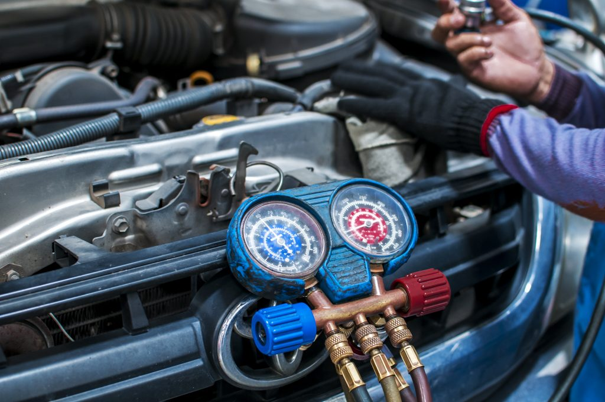

x
Início
Serviços
Novidades
Contato
Localização
Nossos serviços
❄
Carga de gás

Nosso serviço de carga de gás fica pronto em até 45 minutos.
Saiba Mais
Conserto e Manutenção
Fazemos seu orçamento de graça buscando erros, falhas e defeitos.
Saiba Mais